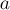
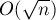
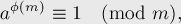

MAXimal
добавлено: 10 Jun 2008 10:57
редактировано: 18 Oct 2011 20:20
Содержание [скрыть]
Функция Эйлера
Определение
Функция Эйлера  (иногда обозначаемая или ) — это количество чисел от
(иногда обозначаемая или ) — это количество чисел от  до
до  , взаимно простых с . Иными словами, это количество таких чисел в отрезке
, взаимно простых с . Иными словами, это количество таких чисел в отрезке ![[1; n]](../tex2png/cache/69cc1de918936aa552092962896df9f8.png) , наибольший общий делитель которых с равен единице.
, наибольший общий делитель которых с равен единице.
Несколько первых значений этой функции (A000010 в энциклопедии OEIS):
Свойства
Три следующих простых свойства функции Эйлера — достаточны, чтобы научиться вычислять её для любых чисел:
- Если
 — простое число, то .
— простое число, то .(Это очевидно, т.к. любое число, кроме самого
, взаимно просто с ним.) - Если — простое,  — натуральное число, то .
(Поскольку с числом не взаимно просты только числа вида , которых штук.)
- Если и
 взаимно простые, то ("мультипликативность" функции Эйлера).
взаимно простые, то ("мультипликативность" функции Эйлера).(Этот факт следует из китайской теоремы об остатках. Рассмотрим произвольное число . Обозначим через
 и
и  остатки от деления
остатки от деления  на и соответственно. Тогда взаимно просто с
на и соответственно. Тогда взаимно просто с  тогда и только тогда, когда взаимно просто с и с по отдельности, или, что то же самое, взаимно просто с и взаимно просто с . Применяя китайскую теорему об остатках, получаем, что любой паре чисел и
тогда и только тогда, когда взаимно просто с и с по отдельности, или, что то же самое, взаимно просто с и взаимно просто с . Применяя китайскую теорему об остатках, получаем, что любой паре чисел и  взаимно однозначно соответствует число , что и завершает доказательство.)
взаимно однозначно соответствует число , что и завершает доказательство.)
Отсюда можно получить функцию Эйлера для любого через его факторизацию (разложение на простые сомножители):
если
(где все  — простые), то
— простые), то
Реализация
Простейший код, вычисляющий функцию Эйлера, факторизуя число элементарным методом за :
int phi (int n) { int result = n; for (int i=2; i*i<=n; ++i) if (n % i == 0) { while (n % i == 0) n /= i; result -= result / i; } if (n > 1) result -= result / n; return result; }
Ключевое место для вычисление функции Эйлера — это нахождение факторизации числа . Его можно осуществить за время, значительно меньшее  : см. Эффективные алгоритмы факторизации.
: см. Эффективные алгоритмы факторизации.
Приложения функции Эйлера
Самое известное и важное свойство функции Эйлера выражается в теореме Эйлера:

где и взаимно просты.В частном случае, когда простое, теорема Эйлера превращается в так называемую малую теорему Ферма:
Теорема Эйлера достаточно часто встречается в практических приложениях, например, см. Обратный элемент в поле по модулю.
Задачи в online judges
Список задач, в которых требуется посчитать функцию Эйлера,либо воспользоваться теоремой Эйлера, либо по значению функции Эйлера восстанавливать исходное число:
- UVA #10179 "Irreducible Basic Fractions" [сложность: низкая]
- UVA #10299 "Relatives" [сложность: низкая]
- UVA #11327 "Enumerating Rational Numbers" [сложность: средняя]
- TIMUS #1673 "Допуск к экзамену" [сложность: высокая]